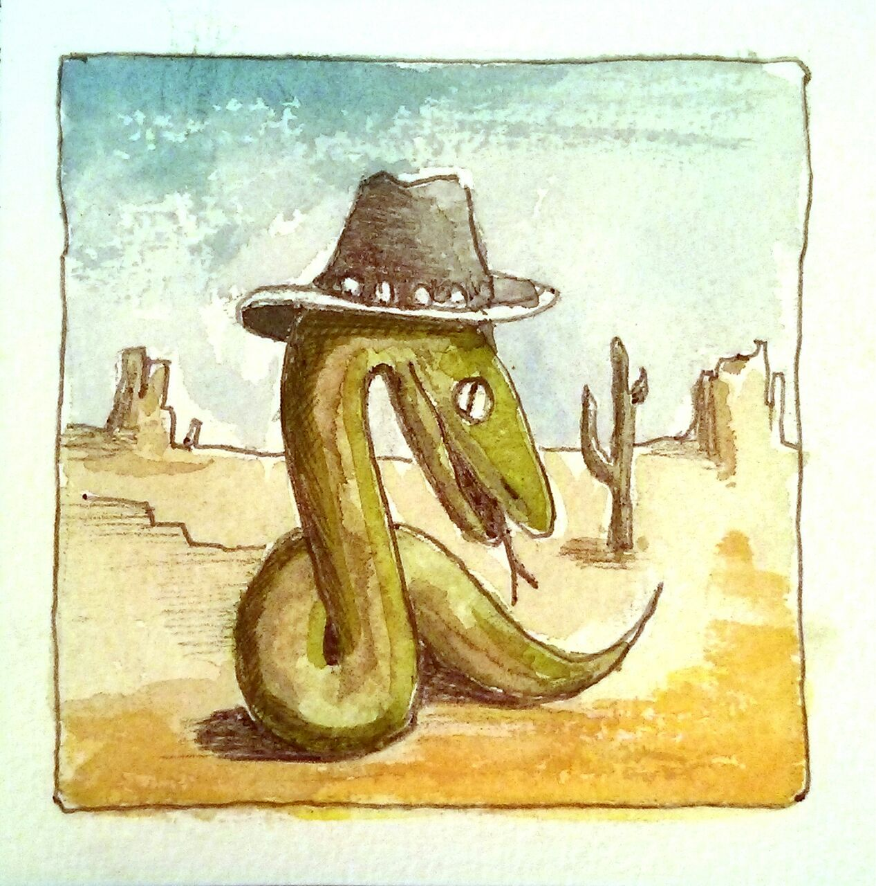

Учебник TaskBuster Django¶
Я очень рада представить вам этот Django учебник, сделанный с помощью Django 1.8 и Python 3.
В этом обучающем руководстве я покажу вам как создать проект Django с нуля.
Я остановлюсь в простом проекте Диспетчера задач, но идея состоит в том, что Вы можете следовать этому учебнику, разрабатывая Ваш собственный проект.
Специально в первых постах. Вы также можете скачать шаблон проекта Django!
Однако это не обычный учебник Django.
Гораздо лучше: это как контрольный список для создания сложного проекта Django.
Вы узнаете о проблемах безопасности, различные среды для разработки и тестирования, системы контроля версий, развертывание на Heroku, конфигурация PostgreSQL и многое другое!
{kind=link}
Кроме того, при построении проекта TaskBuster, я постараюсь охватить как можно больше лучших практик Django, сколько я могу.
Наслаждайтесь и учитесь столько, сколько вы можете! 
Ах, и позвольте мне представить вам нашего главного героя, вы узнаете его через этот учебник. Это Питон с интересной шляпкой...
Да, это наш питомец Django!
Большое спасибо Enric Melé за дизайн
Содержание:
- Часть I – Рабочая среда и начало проекта Django
- Часть II – Файлы настроек и Управление Версиями
- Часть III – Создание домашней страницы используя РЧТ, Статические файлы и настройки Шаблонов
- Часть IV – Файлы веб-сайта и Тестирование с coverage (покрытие)
- Часть V – Интернационализация и Локализация. Языки и временные зоны
- Part VI – Documenting the TaskBuster Django Boilerplate